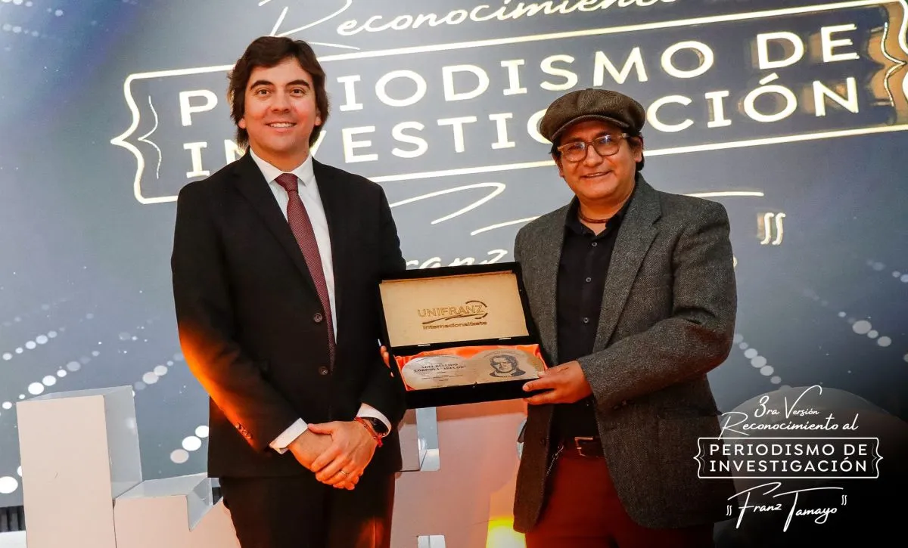
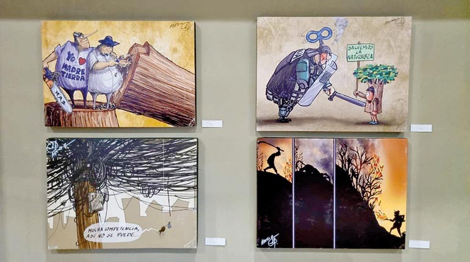
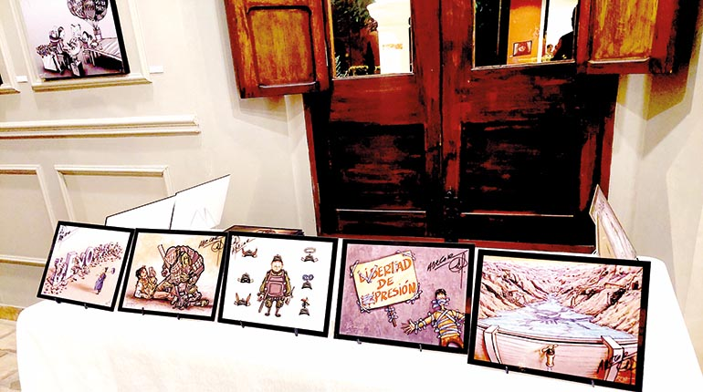
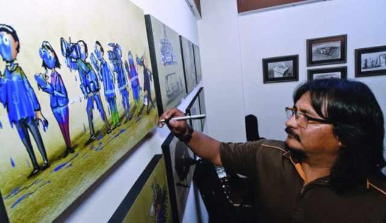
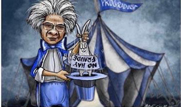
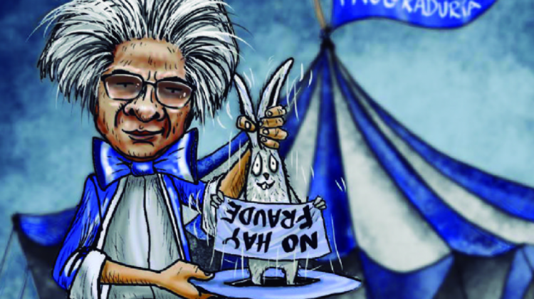
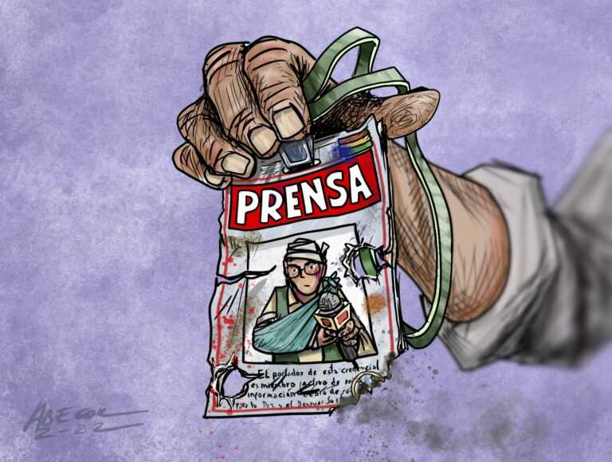

Caricaturista Abecor pide garantías tras amenazas de muerte
La ANP respalda al editorialista gráfico de Página Siete después de una caricatura del procurador Wilfredo Chávez. Abecor pidió garantías al recibir amenazas.
Abel Bellido Córdova, conocido como Abecor, es el caricaturista de Página Siete. En octubre de 2021 una viñeta suya se hizo viral y llegaron las amenazas. Lo que sigue no son cuatro historias sueltas: es el mismo caso, contado por cuatro medios.

El oficio
Abecor no redacta la noticia del día. La resume en una imagen para Página Siete. Una viñeta puede recorrer las redes más rápido que el texto que la acompaña, y también recibir una reacción más dura, porque concentra en un solo trazo lo que otros desarrollan en varios párrafos.
Por eso este caso importa más allá de un dibujo: muestra qué pasa cuando la opinión gráfica se vuelve incómoda y la respuesta deja de ser otra opinión.


18 de octubre de 2021
Ese lunes, Página Siete publicó la caricatura en la que el procurador general del Estado, Wilfredo Chávez, aparece vestido de mago. La imagen circuló en redes. Chávez respondió desde Twitter con otra imagen.
Días después, Abecor contó que había recibido amenazas por esa viñeta y pidió garantías. No era la primera vez: a finales de agosto ya había denunciado un mensaje intimidatorio, después de otra viñeta sobre la misma autoridad. El periodista Tuffí Aré Vásquez pidió públicamente esas garantías.
Lo que siguió
El 21 de octubre, Correo del Sur y la Agencia de Noticias Fides recogieron el caso. La Asociación Nacional de la Prensa respaldó al caricaturista. UNITAS y dos gremios periodísticos advirtieron que amenazar a quien dibuja una opinión daña la libre expresión.
En noviembre de 2022 la ANP volvió al tema. Abecor contó que las intimidaciones también habían llegado a su familia. No renunciaba a expresarse, pero cuidar a los suyos pasaba a ser la prioridad. La nota iba ilustrada con otra viñeta suya: un carné de prensa dañado.

Página Siete publica la caricatura. Se comparte en redes y el procurador responde con una imagen.
La Patria, Correo del Sur y Noticias Fides reportan el pedido de garantías y el respaldo de los gremios.
La ANP informa que las intimidaciones también alcanzaron a la familia de Abecor.
Cada tarjeta abre la nota original. El hecho es uno; cambia quién lo cuenta y en qué momento.

Correo del SurLa ANP respalda al editorialista gráfico de Página Siete después de una caricatura del procurador Wilfredo Chávez. Abecor pidió garantías al recibir amenazas.

La PatriaLa Patria recoge el relato del artista: la viñeta se hizo viral y volvió a ser blanco de intimidaciones por la misma opinión gráfica.

Noticias FidesUNITAS y dos gremios periodísticos advierten que las amenazas contra el caricaturista de Página Siete dañan la libre expresión en una sociedad democrática.

ANP BoliviaAbel Bellido contó que las intimidaciones también llegaron a su familia. No renuncia a la libertad de expresión, pero cuidar a los suyos es prioridad.